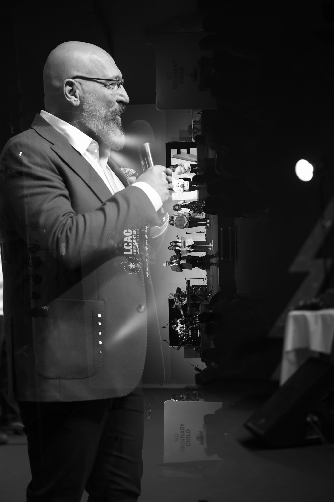
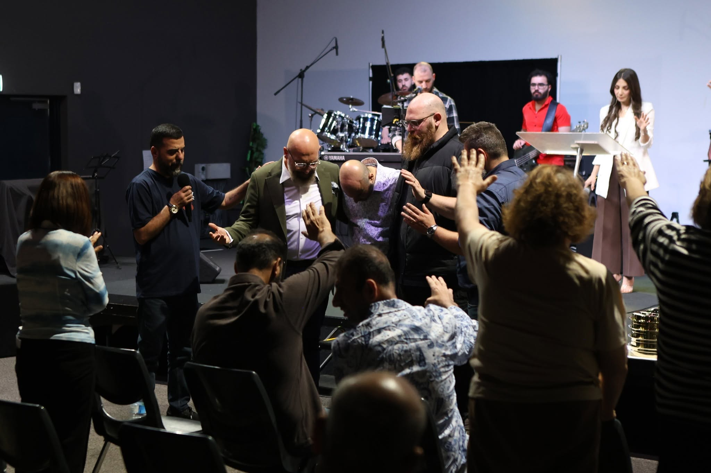
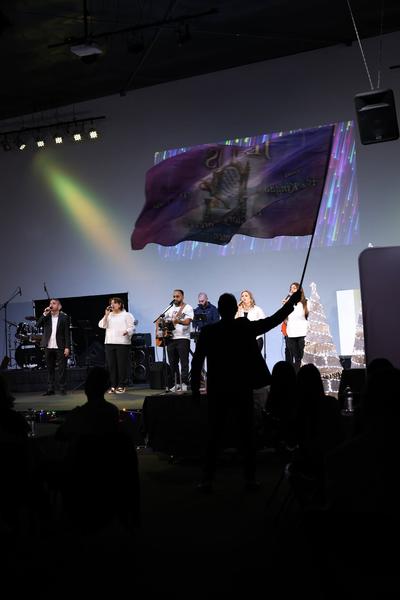
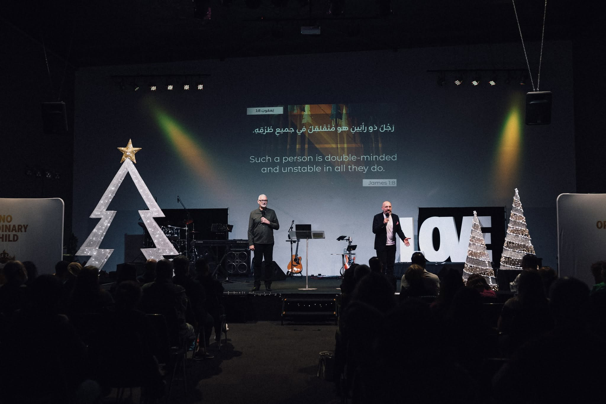

"سراج لرجلي كلامك ونور لسبيلي"
نخوض معاً رحلة تعمق في كلمة الله عبر محاور وسلاسل تعليمية متنوعة:
شذرات روحية قصيرة لتكون غذاءً للروح خلال الأسبوع:
"الله ليس بظالم حتى ينسى تعب محبتكم.. تمسك بالرجاء ولا تهتز، فالرب يرى خفايا قلبك ويجازيك علانية."
"الكلمة المقدسة ليست مجرد حروف للتاريخ، بل هي مرآة لحيّ يكلمك اليوم وسط ظروفك الخاصة ليمنحك سلاماً يفوق كل عقل."
لفتات محبة وأوقات مباركة خلال دراستنا لكلمة الله معاً:



